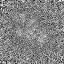
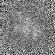
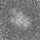

最小
最大
平均値
標準偏差
標準誤差
-65.0178
94.4699
4.85274
20.4635
0.255794
| オプション | 必須項目/選択項目 | 説明 | デフォルト |
|---|---|---|---|
| -i | 必須 | 入力ファイル設定 | NULL |
| -o | 必須 | 出力ファイル設定 | NULL |
| -sx | 選択 | カーネルサイズ（ｘ軸）を設定 | 25 |
| -sy | 選択 | カーネルサイズ（ｙ軸）を設定 | 25 |
| -sz | 選択 | カーネルサイズ（ｚ軸）を設定 | 25 |
| -h | 選択 | ヘルプを表示 |
|
最小 |
-65.0178 |
|  | 最小 |
1.01639 |
|  | 最小 |
2.47541 |
|  | 最小 |
3.28807 |